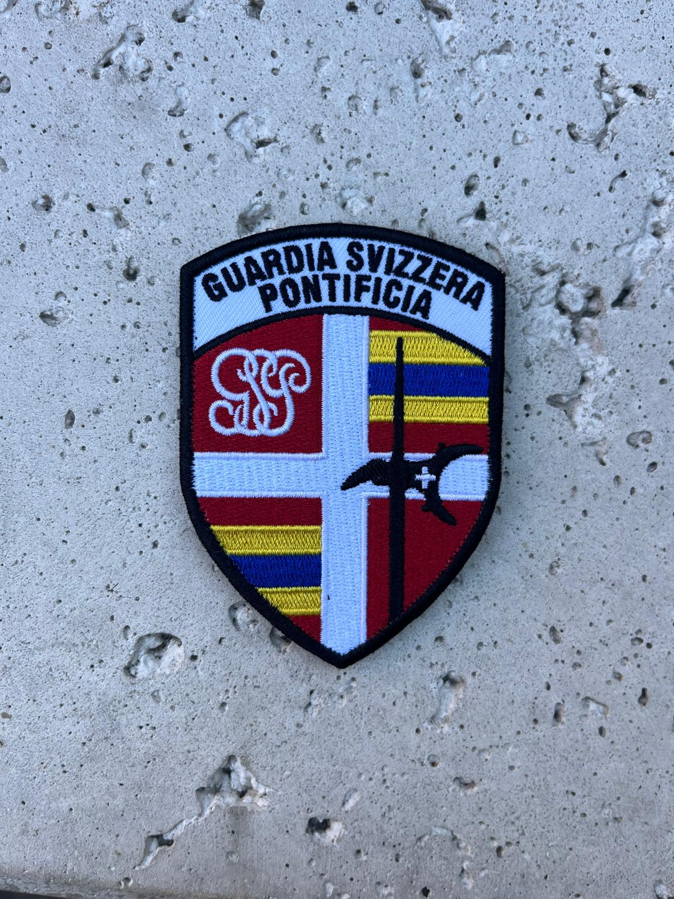
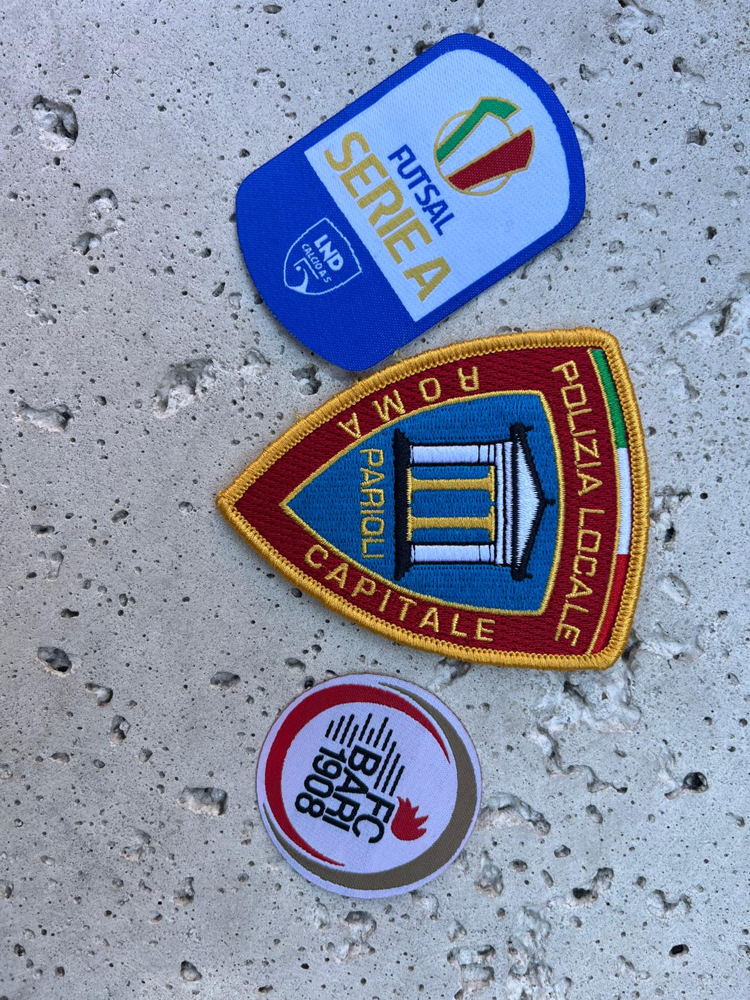

Patch Ricamate
Effetto tridimensionale e alta percezione di qualità. Ideali per divise, uniformi e capi ufficiali.
Scopri di più →Patch ricamate, velcro, woven e PVC realizzate con esperienza produttiva reale. Un progetto verticale Euroricami per chi cerca qualità, continuità e riordini affidabili.

Ogni tecnica ha caratteristiche diverse in termini di resa, resistenza e costo di produzione. Ti aiutiamo a scegliere quella corretta in base all'uso previsto.

Effetto tridimensionale e alta percezione di qualità. Ideali per divise, uniformi e capi ufficiali.
Scopri di più →Aggancio removibile per divise intercambiabili. Diffuse in ambito militare e forze dell'ordine.
Scopri di più →
Tessitura ad alta definizione per loghi con dettagli fini e formati ridotti.
Scopri di più →
Colori pieni, effetto 3D e resistenza ad acqua e usura intensa. Adatte all'outdoor.
Scopri di più →Realizziamo forniture continuative e ordini singoli, dal primo campione al riordino a distanza di anni.
Stemmi, gradi e distintivi conformi alle esigenze di divise ufficiali e uniformi da servizio.
Distintivi da cucire su uniformi e zaini, pensati per resistere a lavaggi e uso quotidiano.
Toppe da colletto, gilet ed equipaggiamento tattico, con aggancio velcro per una personalizzazione rapida.
Loghi corporate su abbigliamento da lavoro, gadget promozionali e riconoscimenti per iniziative ed eventi.
PatchLab nasce dall'esperienza produttiva diretta di Euroricami, applicata a un solo prodotto: la patch personalizzata.
Anni di lavorazioni concrete su ricamo, velcro, woven e PVC, non solo intermediazione commerciale.
Le fasi chiave sono seguite internamente, per mantenere controllo diretto su qualità e tempistiche.
Ogni progetto approvato viene archiviato, per rendere semplice un riordino identico anche a distanza di tempo.
In base a volumi e complessità, scegliamo la modalità produttiva più adatta senza perdere il controllo sulla qualità.
Verifica su ogni lotto e pianificazione della produzione in base alla data di consegna richiesta.
Ogni patch viene pensata per poter essere riordinata nel tempo. File grafici, misure, colori, tipo di supporto e fotografia del campione approvato vengono archiviati correttamente, così un riordino riproduce esattamente il risultato originale, anche a distanza di anni.
Inviaci grafica, quantità, dimensioni e data di utilizzo. Ti aiuteremo a scegliere la soluzione più adatta.
Richiedi preventivo